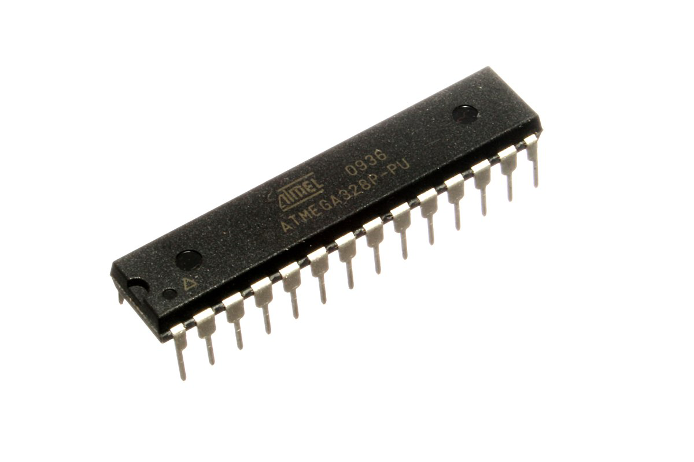
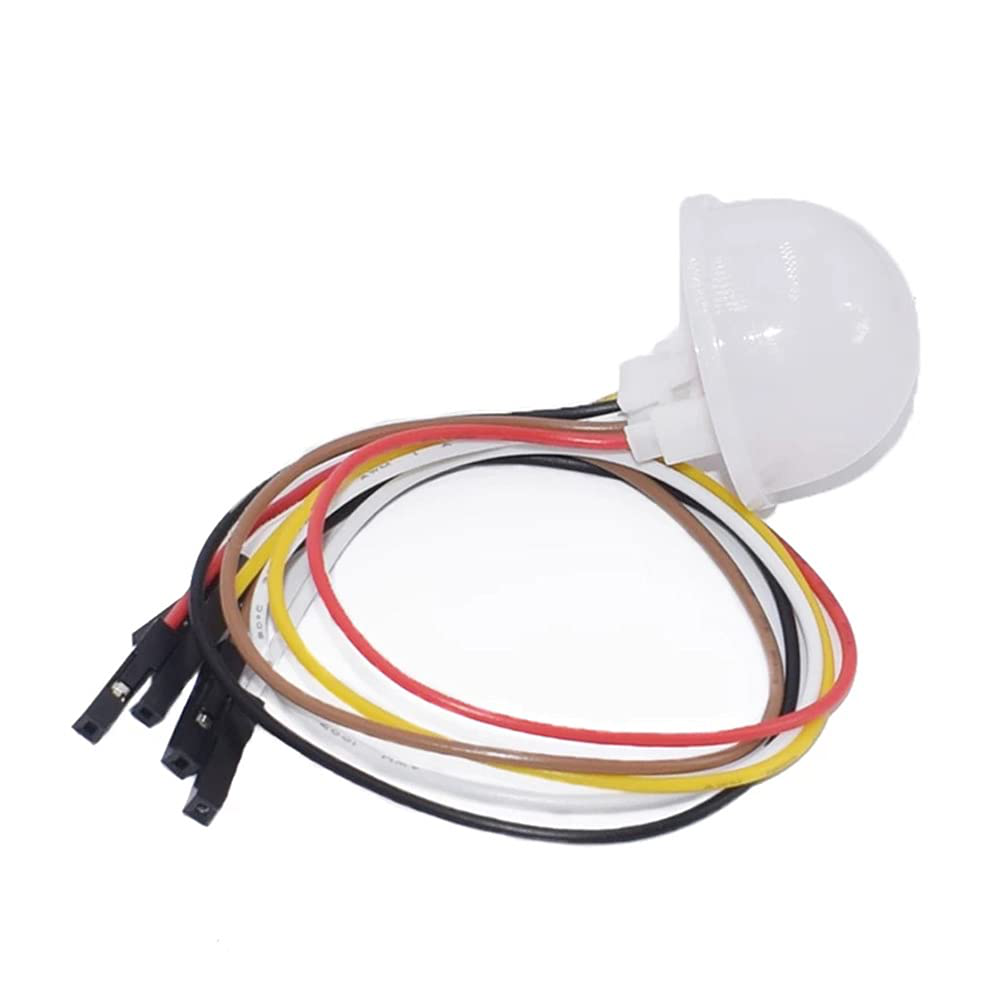
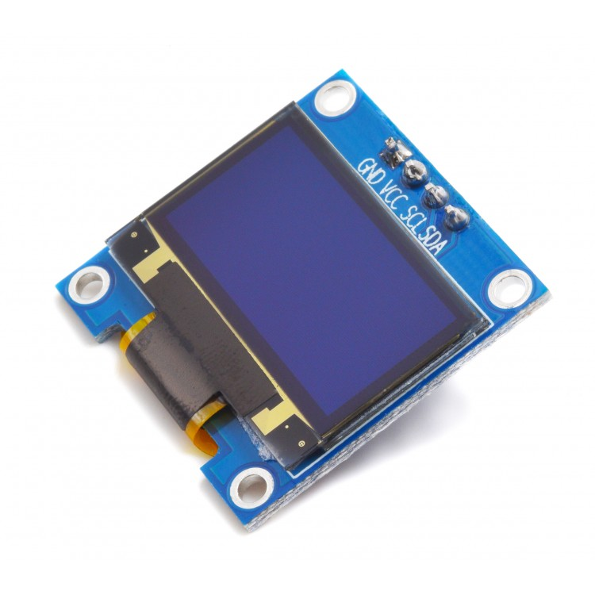
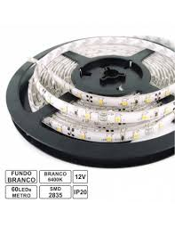
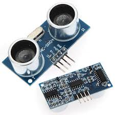
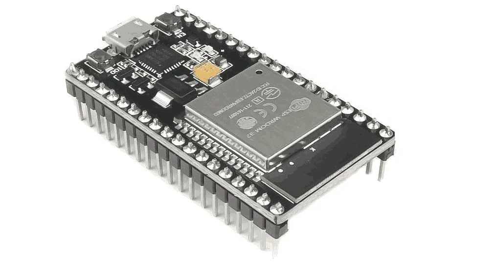
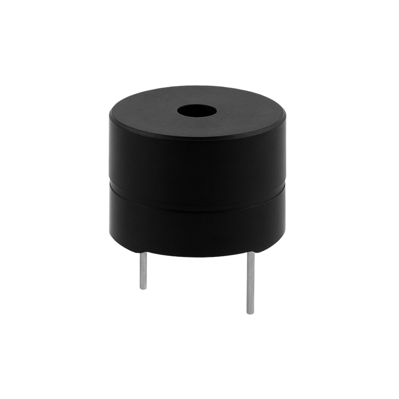
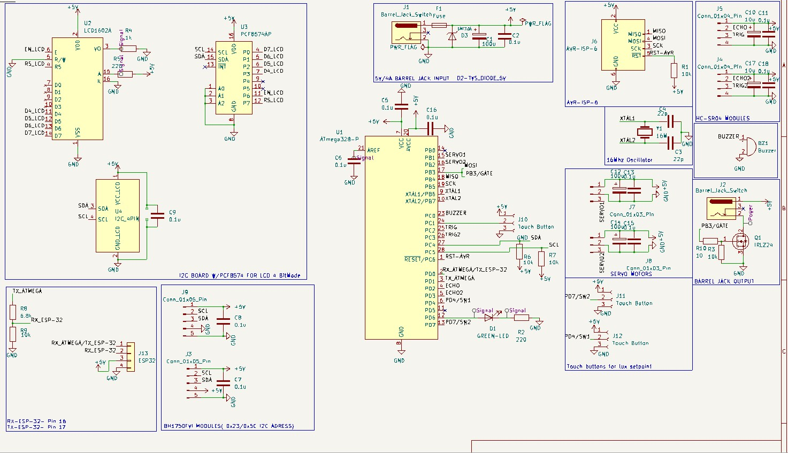

ATmega328P
Responsável pelo processamento da informação, execução do algoritmo de controlo, comunicação com os sensores e comando dos atuadores. A existência de diversos protocolos de comunicação (SPI, I2C, UART), e a larga quantidade de pinos GPIO misturado com um preço baixo e de acesso fácil , faz deste microcontrolador uma boa escolhe para este projeto. [1].

BH1750
Sensor responsável por fornecer uma leitura digital de alta resolução e a transmitir para o microcontrolador de forma a ser tratada e utilizada em diversos processos. [2].

0"96inch OLED I2C
Este pequeno display fornece uma interface de utilizador com todos os valores que são mostrados também na página web. Devido a ser bastante compacto e de necessitar de poucos cabos, este display serve perfeitamente para a sua função. [3].

Fita Led Branca
De maneira a simular um interior real, usou-se 0,5m desta fita led, cuja intensidade pode ser manualmente modificada. [4].

SG90 Rotação Contínua
Para simular os motores presentes numa casa e poder inserir persianas, 2 servos foram usados. De pequeno porte e também torque, fazem sentido neste projeto já que o torque não precisa de ser grande e o espaço na maquete é limitado. [5].
HC-SR04
O sonar escolhido apesar da sua baixa fiabilidade (o que aumentou a dificuldade de o controlar e calibrar), serve para a dimensão do projeto. Nesta maquete foram colocados 2 sonares com uma diferença de 10cm de altura que atuam como um sensor de gesto e deteta gestos da mão de cima para baixo e de baixo para cima, de modo a controlar as persianas. [6].

ESP-32
Este microcontrolador como possui os mesmos protocolos de comunicação que o Atmega328P, embutido com Wi-Fi e Bluetooth. É a escolha ideal para combinar com o Atmega328P neste projeto de modo a criar uma aplicação móvel. O ESP-32 torna-se um Access Point criando uma rede onde hospeda a página web interativa. [7].

BUZZER
Usado para assinalar marcos no sistema. ex: No arranque do sistema, troca de modo e marcação do setpoint de luz. [8].

ESQUEMA ELÉTRICO
Feito usando a ferramenta de desenho Kicad, este esquema representa todas as ligações existentes do circuito e foi depois utilizado no desenho da PCB dedicada. .


Outra dificuldade derivou da inexistência de algum sensor fim de curso para as persianas, e visto que os servos não têm capacidade de controlo de posição, ao contrário dos motores de passo por exemplo. Para resolver isto foi necessário densenvolver um sistema de controlo de posição virtual que pode falhar pois a velocidade dos motores não é constante, e este sistema baseia-se no tempo de subida e descida de cada persiana.
A solução lógica encontrada para regular o sistema em modo automático baseia-se em constantemente comparar, contando com uma tolerância, o setpoint de luz com a luminosidade atual e atuar de acordo com a situação. Se o problema for falta de luz o sistema abre primeiro as persianas até ao máximo e se ainda faltar então atua na fita led, ajustando a intensidade até ao ponto necessário, isto para promover o uso de luz natural no lugar de luz artificia. Se o problema for luz a mais, o sistema verifica se os leds estão ligados, caso estejam, sofrem um desfasamento gradual até ao ponto certo. Caso ainda seja necessário, então as persianas fecham à vez.
No que diz respeito à parte elétrica, o PCB está protegido por um fusível e um díodo TVS. O desenho desta placa acabou por ficar bastante organizado e eficiente.
Posso assim afirmar, que o objetivo principal de criar um sistema inteligente de iluminação foi cumprido.
.Desenvolver com recurso à EEPROM um função que guarda a última posição da persiana;
.Desenvolver perfis de iluminosidade para cada utilizador;
.Funções de economia de energia aplicadas a microcontroladores;
.Modificações necessárias para que permitisse o controlo do sistema em qualquer ponto do mundo;
Concluo dizem assim, que foi um projeto completo numa área competitiva, que tem impacto real com vários pontos a melhorar.
[1] MICROCHIP TECHNOLOGY INC. — ATmega328P 8-bit AVR Microcontroller Datasheet. Microchip, Rev. DS40002061B, 2018. Disponível em: https://microchip.com/ATmega328P
[2] ROHM SEMICONDUCTOR — BH1750FVI Ambient Light Sensor Datasheet. ROHM, 2011. Disponível em: https://rohm.com/BH1750FVI
[3] WAVESHARE — 0.96" OLED Display Module I2C Technical Specification. Waveshare, 2019. Disponível em: https://waveshare.com/0.96-oled
[4] GENERIC LED STRIP MANUFACTURER — 12V White LED Strip – Technical Datasheet. Rev. 2, 2020. Disponível em: https://adafruit.com/led-strip-datasheet
[5] TOWER PRO — SG90 Micro Servo Motor Datasheet. Tower Pro, 2015. Disponível em: https://towerpro.com.sg/sg90
[6] ELEGOO / GENERIC — HC-SR04 Ultrasonic Distance Sensor Datasheet. Rev. 1.2, 2018. Disponível em: https://sparkfun.com/hcsr04
[7] ESPRESSIF SYSTEMS — ESP32 Series Datasheet. Espressif, Rev. 3.3, 2022. Disponível em: https://espressif.com/esp32-datasheet
[8] CUI DEVICES — Piezoelectric Buzzer Technical Datasheet. CUI, 2020. Disponível em: https://cuidevices.com/buzzer-datasheet
[9] KICAD PROJECT — Printed Circuit Board (PCB) Design Files and Schematics. Projeto LABSI, 2026. Disponível em: https://kicad.org